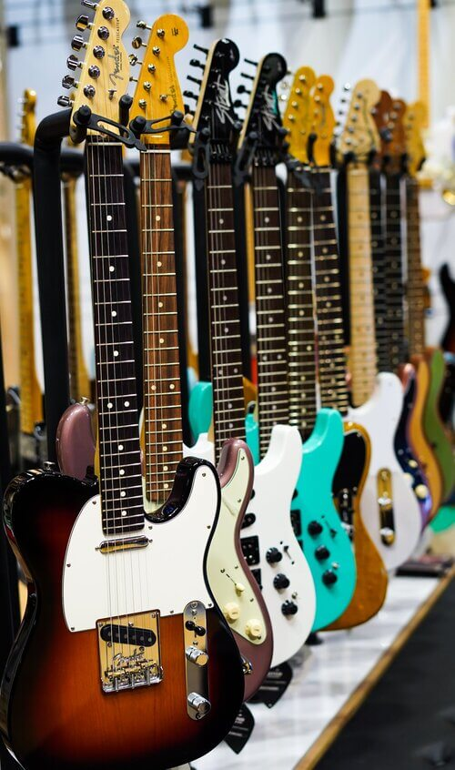
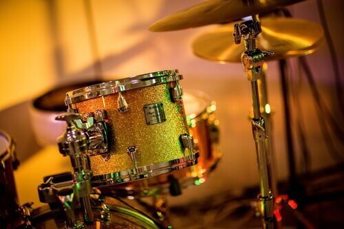

String & Percussion Instruments
 String Instruments
With string instruments, as the name implies, sounds are produced via vibrating strings. The generated sounds depend upon a few things such as the length and thickness of the strings, and the length of the air column in the resonator. Some string instruments such as the electric guitar also have electronic sound boards which pick up and amplify the sounds. Some common types of string instruments are guitars, violins, cellos and harps. String instruments are generally quieter in comparison to other types of instruments.
Percussion Instruments
With percussion instruments, sounds are made by striking the instrument or part of the instrument, with your hand, fingers, or some object such as a drum stick for example. Some percussion instruments, especially unpitched percussion instruments, might take a little more patience to learn to master since part of the skill is to know the level of force at which the instrument should be struck to get the desired sound. Some common types of percussion instruments are drums, cymbals, triangles and xylophones.